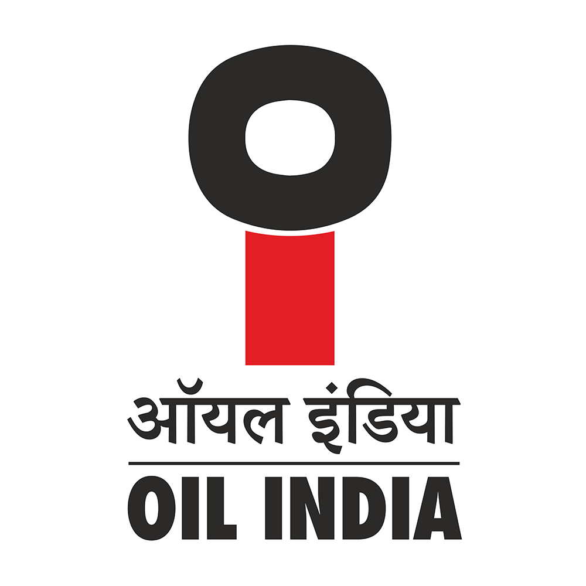
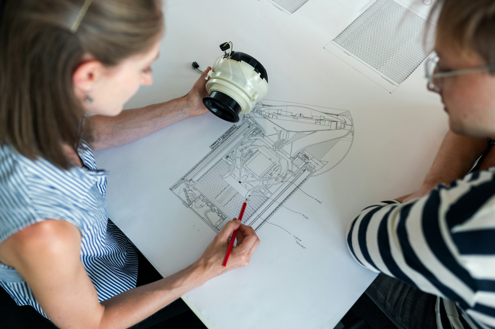

01
How the field speaks
“Spool erection and field fit-up finished at Manifold A.”
- Project terminology and abbreviated notes
- Work location and reported date
- Supporting evidence to examine
Field-to-plan intelligence
SIH 2026 / SIH26122
SETU links site progress reports to Primavera P6 schedule activities. It explains each suggestion, flags conflicts and keeps the human planner in control.
No credentials needed · 3-minute public demo · Synthetic examples
“Spool erection and field fit-up finished at Manifold A.”
Original context stays with the report.Piping spool erection
and field fit-up
The evidence informs.
The planner decides.
The translation gap
A site note says “spool fit-up finished.” A plan needs an activity, a location and evidence. SETU makes that connection visible so the planner can decide.

“Spool erection and field fit-up finished at Manifold A.”
An activity suggestion is a starting point. It does not change the baseline.
The SETU pipeline
Move from what happened on site to what belongs in the plan. Keep the evidence connected at every step.
Trace a sample reportBring field notes and structured reports into one review flow.
Extract activity, date, location, quantity and evidence.
Compare domain terms, semantic similarity and project context.
Surface timing, scope, duplicate and ambiguity checks.
A planner accepts, rejects, clarifies or remaps the suggestion.
Keep approved mappings and corrections available for later review.
Approval is a planner action. Matching and validation support that decision.
A report, in context
Explore SETU Demo: follow a Supervisor observation through interpretation, matching, validation, a sample planner decision and its audit trail. About 3 minutes; no sign-in.
01 / Original evidence
The report text, location and date remain visible throughout review. A suggestion connects that evidence to a candidate activity.
The example is precomputed synthetic data. This walkthrough does not process new reports.
Planner control
SETU suggests and validates. The planner checks the evidence, resolves ambiguity and owns the decision.
The Primavera P6 baseline stays read-only.
Examine the report, suggested activity and validation findings together.
Reject, request clarification or select a better target when the evidence does not support a suggestion.
Approved mappings feed traceable records and export. The prototype does not silently write to P6.
Institutional memory
Reviewed mappings and planner corrections provide reusable project context. Future suggestions still need validation and review.
Illustrative terminology, not a measured accuracy improvement.
A closer look
Inspect the connection between a site report and a planning activity. The interactive walkthrough is available even when a recording is not.
Trace a sample report →Follow stored sample evidence and a simulated planner decision. This public walkthrough does not run the matching engine or contact the live application.
Launch Walkthrough →Live Product Access
Connect to the live deployed prototype on Cloudflare Pages. Site supervisors capture progress and project planners govern Primavera P6 baselines.
Hosted live on Cloudflare Pages at setu-app.pages.dev. Sign-in and an assigned role are required. Public evaluators should use the demo above; credentials are not supplied.
Simulate field report matching, alias resolution, and validation checks directly on this page.
Explore the walkthrough ↓Authenticated prototype: sign-in and an assigned role are required. This is separate from the public demo and is not needed to evaluate the example.
Open live app (sign-in required) ↗Direct URL to access the deployed Cloudflare application.
Direct application access ready.
Inspect the complete codebase, matching algorithms, database migrations, and benchmark suites.
Explore repository ↗Explore source code and documentation.
Repository link ready.
Evidence, not promises
Prototype source reviewed at commit 120b5e7 · 23 October 2026. Repository implementation does not prove every feature is configured in the hosted app.
40 reports and 220 activities describe historical synthetic calibration fixtures, not active users, current production throughput or field accuracy. Inspect benchmark methodology →
Landing page source →Built to be examined
Review the source, workflow boundaries and benchmark methodology. SETU is a prototype for plan–field integration, developed for SIH 2026, problem statement SIH26122.
Oil India Limited is the problem-statement stakeholder. This page does not claim an operational pilot or endorsement.
40synthetic reports
220schedule activities
Synthetic, self-labelled calibration data. These are not production or field-pilot results.
A preview, browser policy or destination host can block access. Use a direct link or copy the address into your browser.
Direct access and the sample remain available.
Continue with the sample →